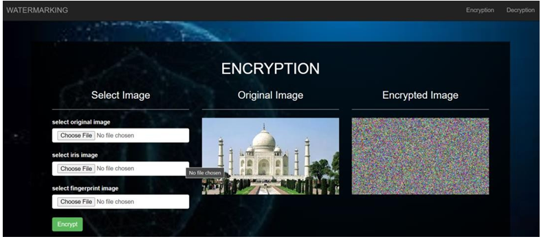
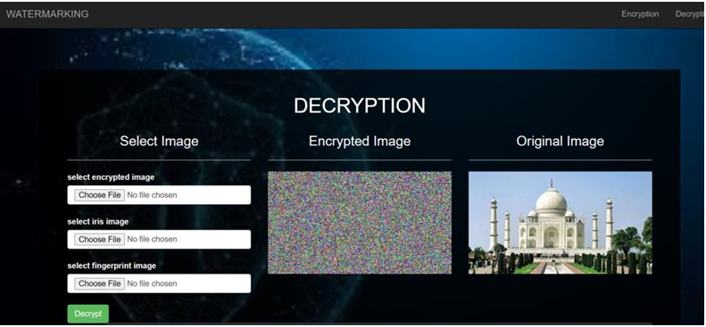

ON-SOFT BIOMETRIC INFORMATION STORED IN FACE EMBEDDING
Biometrics refers to the physiological or behavioral characteristics of a person to authenticate his/her identity.A biometric system provides automatic recognition of an individual based on some sort of unique feature or characteristic possessed by the individual.Watermark is a digital code irremovably robustly and imperceptibly embedded in the host data and typically contains information about origin status and destination of the data
Provide secure authentication of digital documents: Biometric
watermarking can be used to ensure the authenticity of digital
documents and verify the identity of the user.Enhance data integrity: Biometric watermarking can be used to
protect the data from unauthorized tampering and modification.
Protect confidential informtion:
Biometric watermarking can be used
to protect confidential information from unauthorized access and
disclosure.
Prevent identity theft: Biometric watermarking can be used to protect
against identity theft by ensuring that only authorized users can
access private information.
Embedding Process : This process is involved in the generation of a unique encrypted ID / master share.
Extraction Process: This process involves extracting the fingerprint (watermark image) with the help of unique encrypted ID (master share).
The technique of biometric watermarking is designed to avoid distortion of the original image, which is particularly important in biometrics where even the slightest variation in an image can alter a person's unique identity. Our project offers an efficient method for watermarking biometric images while causing minimal distortion to the original images. The algorithm proposed in our project uses DWT and SVD to extract distinct attributes, resulting in an effective integration of the biometric watermarking process. The master-share of each image is uniquely generated, and the algorithm is robust against several image processing attacks, as demonstrated by the experimental results.